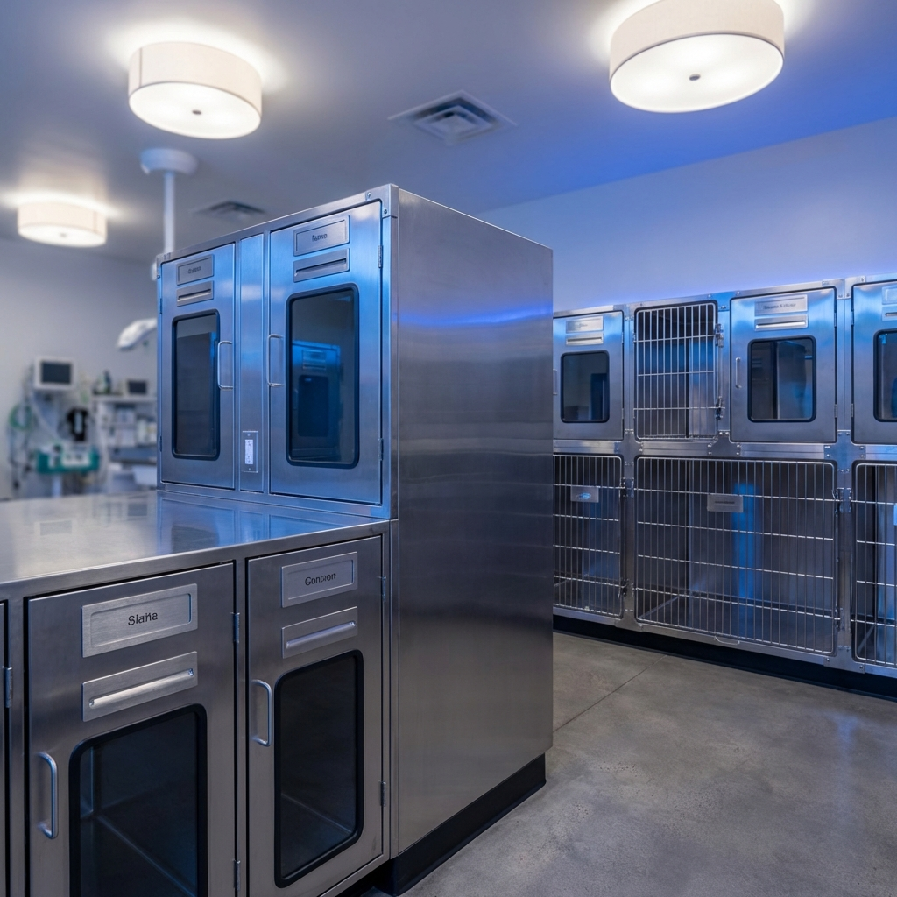

Módulos de Hospitalización
Recuperación segura e higiénica para pacientes veterinarios
Hospitalización Profesional
Nuestros módulos de hospitalización veterinaria están construidos íntegramente en acero inoxidable AISI 304, proporcionando un ambiente estéril y de fácil limpieza para la recuperación post-operatoria de mascotas y animales de mayor tamaño.
Cada módulo está diseñado como un sistema apilable que permite configurar la jaula de hospitalización según las necesidades de la clínica. Las puertas frontales cuentan con cierres de doble seguridad y bisagras de acero inoxidable que resisten miles de ciclos de apertura sin desgaste.
Los pisos son removibles con sistema de rejilla elevada que permite el drenaje de líquidos hacia una bandeja recolectora inferior. La ventilación lateral con perforaciones calibradas asegura una circulación de aire adecuada sin corrientes directas sobre el paciente.
Ficha Técnica
- Material: Acero Inoxidable AISI 304, calibre 20
- Módulo individual: 80 x 60 x 60 cm (ancho x profundidad x alto)
- Configuración: Apilable hasta 3 niveles
- Puerta: Frontal abatible con cierre de doble seguridad
- Piso: Rejilla removible en acero inoxidable
- Bandeja: Recolectora de fluidos, extraíble
- Ventilación: Perforaciones laterales calibradas
- Capacidad de carga: 50 kg por módulo
- Acabado: Pulido sanitario, bordes doblados sin filos
- Versiones: Individual, doble y triple (2, 4 y 6 compartimentos)
Galería del Producto

Módulo Doble Apilable